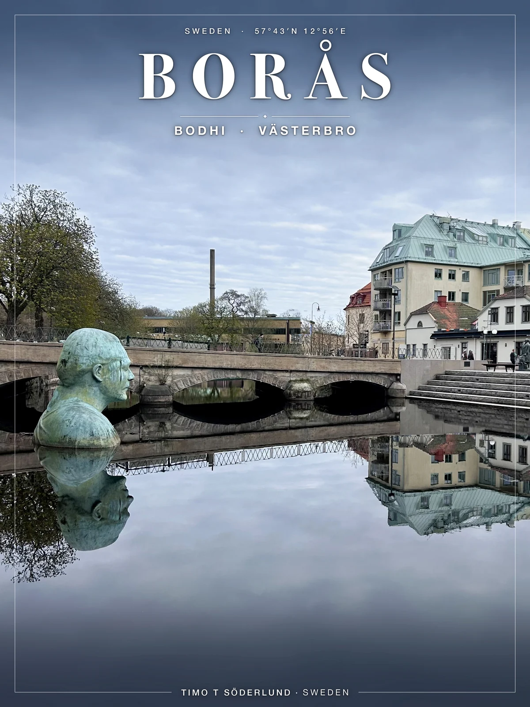

Bodhi · Västerbro
Bodhi Sculpture & Västerbro Bridge · Borås, Sweden
English
Seen in quiet profile beside the stone arches of Västerbro, Fredrik Wretman's bronze sculpture Bodhi rests in the mirror-calm Viskan river in central Borås, Sweden. Soft overcast light turns the water into glass, reflecting both the sculpture and the copper-roofed historic buildings along the riverbank. Created by Timo T Söderlund for Borås Poster Project 2026 in Boras, Sweden.
Svenska
Sedd i lugn profil intill Västerbros stenvalv vilar Fredrik Wretmans bronsskulptur Bodhi i det spegelblanka vattnet i Viskan i centrala Borås. Mjukt nordiskt ljus förvandlar älven till en spegel som fångar både skulpturen och de koppartäckta historiska husen längs strandkanten. Skapad av Timo T Söderlund för Borås Poster Project 2026.
Photographer & Edition: Timo T Söderlund · Borås, Sweden (2026)